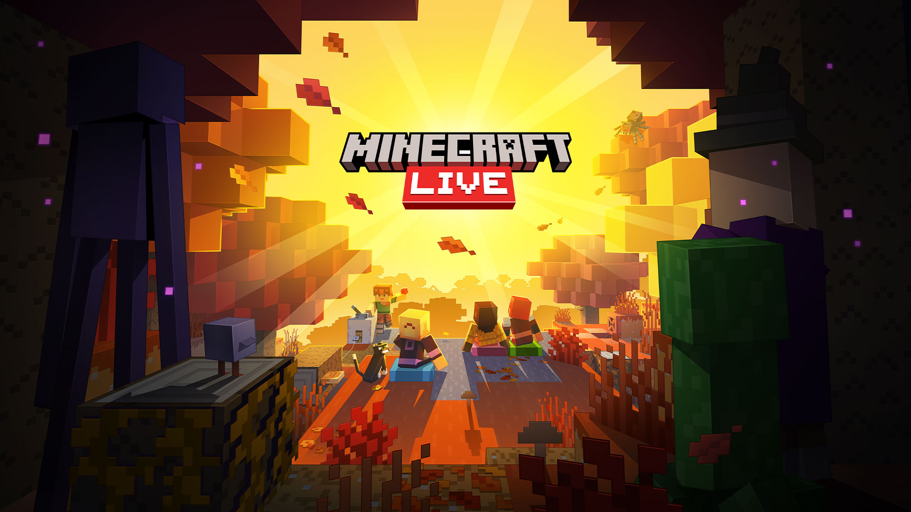
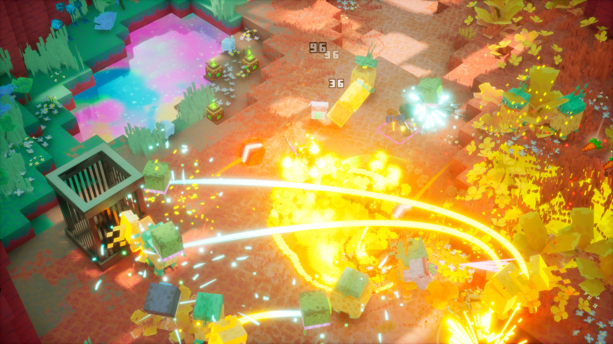

🎬 Minecraft LIVE（2026-09）片单（已播）
- 火苗
- 🔥🔥🔥（3）
- 轴
- exhibition
- 日期
- 2026-09-27
昨 pending 翻牌：Minecraft LIVE 已于 09-26 10:00 PDT（≈09-27 01:00 CST）播出。官方 Recap + Xbox Wire + Windows Central 交叉：世界首发级内容为「筛界（The Sift）」确认 2027 登…
今日主线是行业 🎬 Minecraft LIVE 翻牌建片单（筛界 2027 进本体 + Ice Caves 下一档 Drop）+ EG7/Cold Iron 减员与异形：火力精英2 Switch 2 改档；AI 侧无新旗舰、无新 MCP/Skill 推荐，仅记 Gemini×Flipkart 购买测试与 BCBSA 医保编码成本观察。二次元与游戏开发均为空库未出 Tab。显示 2 库。
判定：最高 Attention 落在 Minecraft LIVE 片单（fire3）。今日无新旗舰、无新 MCP/Skill 推荐。显示 2 库。不复述昨 DAWNGAZER / I Know a Guy / Codex 故障。不发涉政。无新游戏事件，不通知头条选题。
最高 Attention 落在行业 🎬 Minecraft LIVE 片单（🔥🔥🔥）。今日无新旗舰；今日无新 MCP/Skill 推荐。显示 2 库；独立轴无新增。二次元空库未出 Tab；游戏开发空库未出 Tab。
待核：筛界/Ice Caves 精确窗；Dungeons II 9/29；星铁 4.6 开服（9/28）；狂三 9/29；鸣潮 3.7；Qwen4 / Sonnet·Haiku 5.5 / Grok 4.8 / V4.1-Pro。
🎬 Minecraft LIVE（2026-09）片单（已播）
昨 pending 翻牌：Minecraft LIVE 已于 09-26 10:00 PDT（≈09-27 01:00 CST）播出。官方 Recap + Xbox Wire + Windows Central 交叉：世界首发级内容为「筛界（The Sift）」确认 2027 登…
EG7 / Cold Iron 裁员；异形：火力精英2（Aliens: Fireteam Elite 2）Switch 2 改档 early 2027
昨窗漏报补入：EG7 于 09-25 21:00（芬兰，≈09-26 02:00 CST）发通稿——全资子公司 Daybreak 旗下 Cold Iron 在《异形：火力精英2》发售后按既定计划减员以降低运营成本；工作室仍留在 Daybreak，继续运营与支持本作。同稿将 Swi…
Google 在印度测试经 Gemini / AI Mode 直连 Flipkart 购买
TechCrunch 标 2026-09-26 6:30 PM PDT（≈09-27 09:30 CST）：Google 在印度小范围测试——Gemini 与 AI Mode 中部分 Flipkart 商品出现「Buy」，点开后进入 Flipkart 结账流且不离开 AI 界面。…
BCBSA：医院侧 AI 推高医保理赔编码，两年约增支 $9.42 亿
TechCrunch 标 2026-09-26 2:02 PM PDT（≈09-27 05:02 CST）转述 Blue Cross Blue Shield Association 分析：医院用 AI 提交理赔相关文档后，两年内医保支出额外约 $9.42 亿；协会称复杂病情编码急…
今日无新旗舰（new_flagship=false）；今日无新 MCP/Skill 推荐（new_mcp_skill_rec=false）。周日窗薄：Google 在印度测 Gemini / AI Mode 直连 Flipkart 购买 + BCBSA 称医院侧 AI 抬高医保理赔编码成本。现役一般文本仍：GPT-6 Astra / Claude Opus 5.5·Fable·Mythos 5.1 / Gemini 3.8 Flash / DeepSeek-V4.1-Flash / Grok 4.7。昨报 Codex 故障恢复 / Muse 早鸟 / Crusoe×Boom / GCP MCP 等不复述。
Pending：Qwen4；Sonnet/Haiku 5.5；Grok 4.8；DeepSeek-V4.1-Pro；Muse Charm 发售日；Flipkart Buy 10 月广推。
TechCrunch 标 2026-09-26 6:30 PM PDT（≈09-27 09:30 CST）：Google 在印度小范围测试——Gemini 与 AI Mode 中部分 Flipkart 商品出现「Buy」，点开后进入 Flipkart 结账流且不离开 AI 界面。测试限部分用户与手机/电子配件等品类；计划 10 月更广推开以迎节日购物季。Google 发言人称「一直在测试新功能」未否认。属 agentic 电商从发现走向交易的应用增量，非新模型、非 MCP/Skill 推荐。
关注度 · 🔥。来源：TechCrunch · Google Flipkart Gemini buy test。
TechCrunch 标 2026-09-26 2:02 PM PDT（≈09-27 05:02 CST）转述 Blue Cross Blue Shield Association 分析：医院用 AI 提交理赔相关文档后，两年内医保支出额外约 $9.42 亿；协会称复杂病情编码急升但「编码与实际治疗脱节」、未见对应诊疗变化。属行业侧 AI 成本外部性观察，非模型发布。
关注度 · 🔥。来源：TechCrunch · Insurers AI healthcare costs。
昨 pending 翻牌：Minecraft LIVE 已于 ≈09-27 01:00 CST 播出，建 🎬 展会片单（最高🔥🔥🔥）——筛界（The Sift）确认 2027 进 Java/Bedrock + Ice Caves / Frozen Zombie 下一档 Drop 首曝。昨漏报补入 EG7 / Cold Iron 减员与异形：火力精英2 Switch 2 改档 early 2027（🔥🔥）。今日无独立游戏观察新增（indie_empty）。无 new_games 进事件池。
不复述 TGS/PCGS、控制:共振/Townfall、昨 DAWNGAZER 独立簇。不发涉政。


昨 pending 翻牌：Minecraft LIVE 已于 09-26 10:00 PDT（≈09-27 01:00 CST）播出。官方 Recap + Xbox Wire + Windows Central 交叉：世界首发级内容为「筛界（The Sift）」确认 2027 登陆 Java/Bedrock（14 年来首个新维度）+ 下一档 Game Drop 首曝 Ice Caves / Frozen Zombie；音效包、Minecraft World 酒店与 Escape the Nether 过山车概念亦为新揭。已定档深潜：Minecraft Dungeons II（仍 9/29）与 我的世界 Switch 2（仍 10/27）压表不单开。命名：筛界 ← 官方简中 about-dungeons-ii；Ice Caves 官方简中稿仍英文 → 留英文；Dungeons II / Minecraft 店名与官方中文页作品名保持英文产品名，系列可称我的世界。
| 作品/内容 | 类型 | 说明 |
|---|---|---|
| 筛界（The Sift）→ 我的世界 Java & Bedrock | 世界首发/新揭 | 2027；14 年来首个新维度 / 第四维度；先于 Dungeons II 体验；官方简中「筛界」 |
| Ice Caves + Frozen Zombie（下一档 Game Drop） | 世界首发/新揭 | 稀有冰穴生物群系；冰晶/冰锥；Frozen Zombie 叠冻结；精确日未锁；官方简中稿暂无店名级译 → 留英文 |
| Sound Effects Packs（Minecraft Marketplace） | 世界首发/新揭 | 官方口径年内上架；非独立游戏 |
| Minecraft World Hotel + Escape the Nether | 世界首发/新揭 | 伦敦 Chessington，2027；首家主题酒店 + 首条 Minecraft 过山车；IP/乐园，不进 new_games |
| Minecraft Dungeons II | 已定档深潜 | LIVE 深潜筛界/互联世界；发售仍 2026-09-29；多平台+Game Pass — 不单开、不进 new_games |
| 我的世界（Minecraft）Nintendo Switch 2 | 已定档深潜 | 秀上祝贺/提醒；档期仍 2026-10-27（Nintendo/官方 8 月已锁）；Vibrant Visuals 默认 — 不单开 |
| Creator Platform 倡议 | 已定档深潜 | 降低创作门槛；无作品级新锁/日期 |
关注度 · 🔥🔥🔥。来源：www.minecraft.net/en-us/article/mclive_sept2026_recap · www.minecraft.net/zh-hans/about-dungeons-ii · news.xbox.com/en-us/2026/09/26/minecraft-new-dimension-s · www.windowscentral.com/gaming/minecraft/minecraft-live-2 · www.minecraft.net/en-us/article/minecraft-coming-nintend · www.nintendo.com/us/whatsnew/minecraft-for-nintendo-swit。
昨窗漏报补入：EG7 于 09-25 21:00（芬兰，≈09-26 02:00 CST）发通稿——全资子公司 Daybreak 旗下 Cold Iron 在《异形：火力精英2》发售后按既定计划减员以降低运营成本；工作室仍留在 Daybreak，继续运营与支持本作。同稿将 Switch 2 版由原 9/29 改档至 early 2027（精确日未锁）。Steam 简中店名「异形：火力精英2」。人数未披露。不与 Xbox 268 裁员并条复述。
关注度 · 🔥🔥。来源：www.inderes.fi/en/releases/enad-global-7-announces-staff · storage.mfn.se/5f4cea28-f698-464c-9f43-ecab592917f1/enad · store.steampowered.com/api/storesearch/?term=Aliens%20Fi。